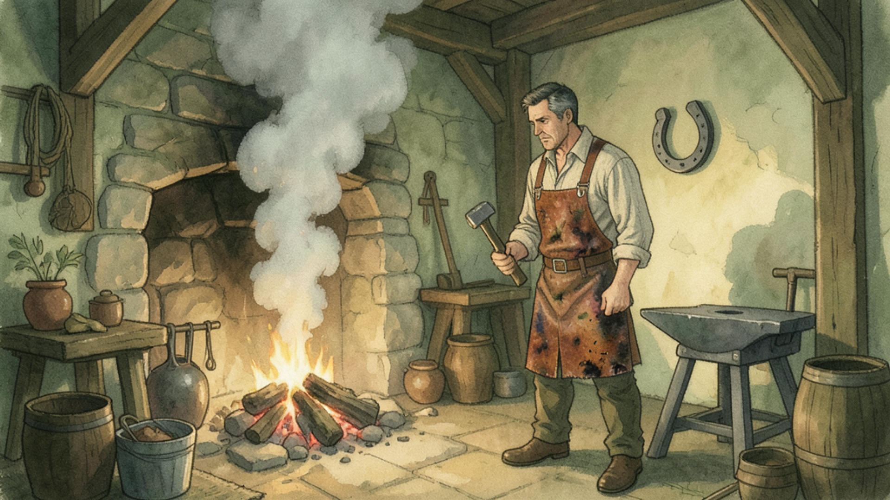

rq-zbo8 — Grandmother, the fountain and Borin match their pictures (agreed)
The chosen option for each. Struck text is today's; green is what ships.
Grandmother — at your door
She is placed where the picture puts her: at the doorway of Elior's room. The tune is “thin and near” because she is just outside it.

Today
Your heart is going hard. The tune is still going too, thin and near: someone is humming it, out by the hearth.
Option A
Your heart is going hard. The tune is still going too, thin and near: someone is humming it, just outside your door.
Today
When I woke, the tune was still going. Someone out by the hearth was humming it.
Option A
When I woke, the tune was still going. Someone just outside my door was humming it.
Today
Grandmother is at the hearth, humming the tune from your dream. She will want to hear about it.
Option A
Grandmother is by your doorway, humming the tune from your dream. She will want to hear about it.
Today
When you go to her, she is humming at the hearth: a slow tune that climbs three notes and settles home again. …
Option A
When you go to her, she is humming by your doorway: a slow tune that climbs three notes and settles home again. …
The fountain — down the tiers
One short sentence for the water; the tiers are named, the bowls are not counted.

Today
Water trickles from the mouth of a stone fish into the basin. The rim is worn smooth where people sit, but no one is sitting there today.
Option B
Water trickles down the stone tiers into the basin. The rim is worn smooth where people sit, but no one is sitting there today.
Borin — watching the fire
He does what the room text and picture say: hammer in hand, eyes on the fire. His answer to a stray word blames the fire, not the noise.

Today
“Mind the sparks, lad.” He doesn't stop hammering. “Not seen you down here since the harvest. …”
Option A
“Mind the sparks, lad.” He doesn't take his eyes off the fire. “Not seen you down here since the harvest. …”
Today
Borin doesn't stop hammering. “Can't hear a word over this, lad. If it's got an edge, bring it here.”
Option A
Borin doesn't take his eyes off the fire. “Fire wants watching, lad. If it's got an edge, bring it here.”
Today
Borin lowers the hammer for a moment. “Words aren't my trade, lad. Iron is.”
Option A
Borin lowers the hammer for a moment. “Words aren't my trade, lad. Iron is.”